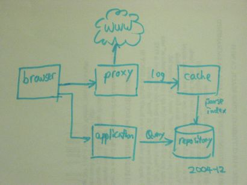

Status
The MindRetrieve engine has been running stably for a while. It hardly
ever crashes (thanks Python). It has been exposed to fairly wide variety
of web sites and good number of HTTP features. Right now my main job is
to tweak the HTML processing and the searching criteria and to build new
features.
Architecture

MindRetrieve is an application implemented in Python with Lucene as the
underlying index and search engine.
Roadmap
0.3 initial release (2004-12)
- A robust personal web search engine
- Windows installer
0.4 release (2005-01)
- MindSearch is now renamed MindRetrieve. Is is now hosted by berlios!
- Unicode repository, CJK support
- Linux release
- Text highlighting
- Proxy chaining
0.5 release (2005 Spring)
- Library feature
- Review and improve search algorithm and ranking
- Improved CJK searching.
0.6 and future releases
- Remote bookmark synchronization
- Search the search
- exclude and purging
- Search javadoc, HTML help
- etc
Credit
The MindRetrieve project is made possible by the contribution of a number
of open source projects. Thank you for your effort and for inspiring
innovations.
- Lucene by the Lucene team
- PyLucene by Andi Vajda, OSAF
- HTMLTemplate by HAS
- 'Tiny HTTP Proxy' by SUZUKI Hisao
- py2exe by Thomas Heller and Mark Hammond
- Innosetup by Jordan Russell
- Python by the Python team
Bug list
Some notable bugs are listed below:
- Only ASCII character set is properly supported. Should use unicode in next release.
- Javascript filtering need to be improved.
- Due to the implementation of PyLucene and the Python GIL, the entire
Python process blocks when it is executing Lucene API. This period is
usually very brief however.
Last updated: 2004-12-28